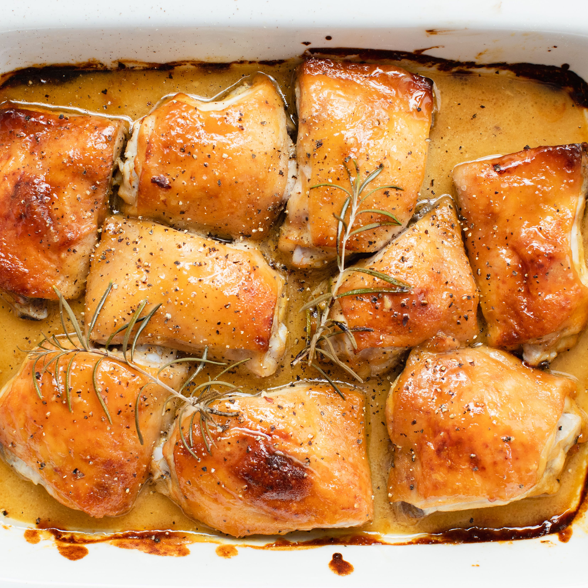

Honey Mustard Chicken Thighs

Juicy oven-baked chicken thighs in a tangy honey mustard sauce made to taste.
Ingredients
- 2-3lb chicken thighs
- 1/2-1 cup spicy brown or Dijon mustard
- 1/2-1 cup honey
- 1 tbsp extra-virgin olive oil
- 1 tsp rosemary
- Salt and pepper to taste
Instructions
- Preheat oven to 400°F.
- Pat down chicken thighs with paper towel then salt and pepper both sides of each thigh.
- Add mustard, honey, olive oil, and pinch of salt to bowl and mix together. Continue to adjust proportions of mustard, honey, and salt until flavor is optimal.
- Once sauce is made, dip each thigh into sauce coating entire thigh and place into baking pan or casserole dish in a single layer. If thighs have skin place them skin-side up
- Pour any extra sauce onto chicken and then sprinkle rosemary on top evenly. Bake 30-40 minutes until internal liquids run clear and chicken easily shreds.